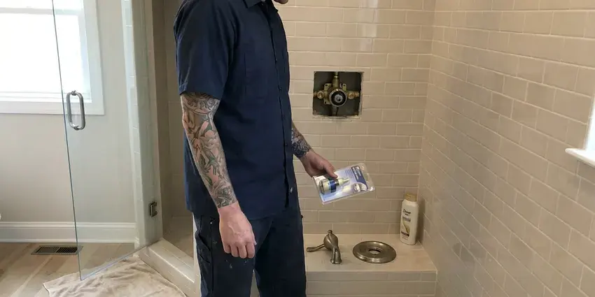

Toilet Installation in Garden City, KS
We install toilets in Garden City, KS bathrooms of every age, from slab-on-grade ranches to second-floor baths over wood joists.
- Next-Day Installs Available
- Old Toilet Removed and Hauled Off
- Installs Around Your Contractor Schedule
- Licensed and Insured

Ready to Swap That Old Toilet in Garden City, KS?
Book with KRV Plumbing and get the toilet set level, sealed and tested in one trip.
Licensed Toilet Installation in Garden City, KS
KRV Plumbing treats a single powder room toilet the same as a whole-house job. We help you pick a bowl shape and seat height that fit. Stainless closet bolts and a braided supply line go on every install, since plated bolts rust tight within a few years and plastic supply lines can split at the nut. Already have the toilet? We will set that one too.
Work we handle every week:
- Rough-in measuring for new floors and new baths
- Two-piece and one-piece toilets set level
- Old toilet removal and disposal

Additional Bathroom Plumbing Services in Garden City, KS
From toilets to showers, our bathroom plumbing team in Garden City, KS handles repairs, installs, and upgrades with tidy, code-compliant work.




Garden City shower repair specialists


Customers
Why Choose KRV Plumbing for Toilet Installation in Garden City, KS?
Our plumbers check the flange before they even unbox your new toilet. If the ring is cracked or rusted, it gets replaced right then. Setting a new toilet on a bad flange is the most common install mistake we see, and it shows up months later as a stained ceiling below or a soft spot in the floor around the base. We would rather fix it the first day.
- Durability, Stainless bolts and braided supply lines last far longer than plated steel and vinyl.
- Water Efficiency, A 1.28 gallon toilet uses under half the water of an old 3.5 gallon model.
- Right Tools, A level, composite shims and a light hand on the bolts keep the porcelain intact.
Citywide Coverage
Across Garden City, our dispatch can usually put a plumber at your door within a day. Same-day slots open up most mornings. Tell us the toilet model when you call, and we will check whether the rough-in and supply connection match before the truck leaves the shop.
Experienced Team
Flange height is where experience shows. The top should sit on or just above the finished floor. Our crew carries spacer rings, extender kits, repair plates and extra-thick foam seals, so a flange that ended up a quarter inch low after new tile still gets a proper compressed seal.
Safety-First Approach
Bolts and flanges corrode in a wet spot like the base of a toilet. We use brass or stainless only. Plated bolts rust in a few years, and a rusted nut turns the next swap into a hacksaw job.
Trusted Certified Garden City Plumbing Services Professionals
At KRV Plumbing, we take pride in licensed, certified plumbing services throughout Garden City, KS. Those papers on the wall mean something. Every repair, install and maintenance visit follows strict safety and quality rules, and the plumbers doing the work carry recognized industry credentials.
Call Us Now PHCC Plumbing Contractor Recognition
PHCC Plumbing Contractor Recognition Better Business Bureau (BBB) Accreditation
Better Business Bureau (BBB) Accreditation Angi Certified Pro
Angi Certified Pro ISO 9001 Quality Management Certification
ISO 9001 Quality Management CertificationTypes of Toilet Installation in Garden City, KS
Toilet Flange and Wax Ring Replacement in Garden City, KS
The closet flange is the ring that ties the toilet to the drain, and it is the weak point on most old installs. Cast iron flanges rust through at the bolt slots. Plastic flanges crack from overtightened bolts, and a stainless repair ring screwed over the old one usually gives a solid anchor again. Seal goes on last.

New Construction Toilet Installation in Garden City
On new builds we set toilets after the finish floor is down, never before. A flange belongs flush with or just above finished flooring. Set it too early and the tile setter has to cut around it, which leaves the flange low and forces a thick seal or an extender later on. Each bowl gets a fresh seal.
Wall-Mounted Toilet Installation in Garden City
Wall-mounted toilets hang off a steel carrier bolted to the floor inside the wall. The tank sits behind an access plate. The carrier holds the whole load, so its feet get anchored to slab or framing and it gets plumbed before any wall finish goes on. Plan on a remodel, not a swap.
Bathroom Remodel Toilet Installation in Garden City, KS
New tile over old vinyl can raise a bathroom floor by half an inch or more. That leaves the old flange sitting low. We bring the flange up with a stacking extender or replace it outright, and if you are moving the toilet on a slab, that means cutting concrete to reroute the drain and patching it afterward. Moving it on a wood floor is easier.
Comfort-Height and ADA Toilets in Garden City
Aging in place usually starts in the bathroom. A grab bar and a taller bowl help a lot. If the drywall is already off, blocking gets added between studs so a grab bar can screw into wood, not hollow-wall anchors. We also center the bowl to ADA spacing.
Toilet Replacement and Upgrades in Garden City, KS
Swapping an old 3.5 gallon toilet for a modern one is the easiest water savings in the house. The old unit comes out in about twenty minutes. The rest is flange cleanup and shimming the new bowl level on a floor that has settled with age. We haul the old one away.
Rough-In Toilet Installation in Garden City, KS
Rough-in is the plumbing that goes in before walls and floors close up. For a toilet that means a 3 inch drain with a vent, plus a cold supply stub. The drain goes 12 inches out from the finished wall line, which means we add the drywall thickness to the framing measurement. Then the inspector sees it open.

Commercial Toilet Installation in Garden City, KS
Commercial restrooms take a beating, so we install vitreous china bowls with flushometer valves rather than tank toilets. A flushometer needs a 1 inch supply and steady pressure. Before setting fixtures in an office or shop, we check that the building supply can deliver the flow the valve is rated for, often 20 to 25 gallons per minute at the fixture. Fixture counts follow code.
Local Toilet Installation in Garden City, KS
Older Garden City homes can hide surprises under the toilet, like a cast iron flange rusted thin or a subfloor gone soft from an old leak. We check for both before setting anything. Any soft plywood gets cut back and replaced with new, glued and screwed down. It adds an hour, sometimes two.
Toilet installers near you in Garden City should be licensed and insured, and they should be willing to pull a permit when the job calls for one. Ask about both on the phone. Moving a toilet or adding a new bathroom usually needs a permit and an inspection, while swapping a toilet in the same spot usually does not. We tell you which applies.
KRV Plumbing at a Glance
- Licensed and insured plumbers serving Garden City, KS
- Same-day appointments and 24/7 emergency response
- Upfront, flat-rate pricing before work begins
- 4.9-star rated by 910+ Kansas customers
Garden City Map
Garden City Information
- Population
- 27,371
- Area codes
- Local
- Service area
- Garden City and communities within 40 miles
- Nearby
- Dodge City, Hays, Hutchinson, Salina
Around Garden City, summer heat keeps irrigation systems and outdoor spigots busy, so leaks and backflow issues are common. A new toilet in a Garden City, KS home should sit flat on the floor, with no daylight under the base and no give when you sit. If it moves, it will leak sooner or later.
Expert Services
Call KRV Plumbing for honest, reliable plumbing from people who know the trade in Garden City, KS.
Our Specialized Plumbing Services in Garden City, KS
At KRV Plumbing, you get every kind of plumbing service from one company across Garden City, KS. We go from leak detection all the way to full system installations, for homes and commercial buildings, and we do it quickly at a fair price. Take a look at our core services below:


What to Expect From a Toilet Install in Garden City, KS
A toilet install in Garden City, KS takes about two hours when the flange is in good shape. Here is how it goes.
Request a Quote
Call (316) 229-8459 with the toilet model or the kind you want. We give you a flat price before booking.
Old Toilet Removal
We close the stop, sponge the tank and bowl dry, and lift the old toilet straight up. We bag it and haul it away.
New Toilet Setup
The flange gets scraped and checked, a new seal goes on, and the bowl is lowered straight down onto stainless bolts. We shim it level before snugging the nuts.
Frequently Asked Questions About Toilet Installation in Garden City
Setting a customer-supplied standard toilet usually costs $200 to $400 in labor. With a mid-range toilet included, most installs land between $450 and $900. Wall-hung systems with an in-wall carrier run $1,500 to $3,500 or more, mostly because the wall has to be opened, framed for the carrier and finished again afterward. We quote a flat price.
Many Kansas homeowners use water softeners to extend the life of their tank water heaters and fixtures against heavy mineral buildup. Hard water leaves scale in the rim jets and on the fill valve over time. Weak flushes follow. Look for full glazing and a simple fill valve, and pour vinegar down the overflow tube now and then to keep the jets clear.
Homeowners set basic toilets all the time. Flange height and bolt torque are where it goes wrong. A low flange needs an extender ring, and one extra turn on a nut can split the base, which is why new floors and wall-hung units should go to a pro.
A one-piece toilet is cast as a single unit, so there is no tank-to-bowl joint to leak. It costs more and weighs more. A two-piece bolts the tank to the bowl with a rubber gasket, which makes it lighter to carry up stairs and cheaper to fix, since you can replace just the tank or just the bowl if one cracks. Both flush well.
It is a toilet with the seat about 17 to 19 inches off the floor, roughly chair height, compared with 15 inches or so on a standard bowl. Most adults find it easier on the knees. Kids and shorter adults sometimes find their feet do not rest flat, so in a shared bathroom we sometimes suggest a standard bowl with a grab bar instead.
Plenty of handy homeowners do. What goes wrong most is cranked-down bolts or a bowl that rocks. A cracked foot from overtightening can show up days later, and a rocking bowl lets water soak the subfloor out of sight. On new floors or wall-hung units, hire it out.
Rough-in is the distance from the finished wall to the center of the toilet drain. Twelve inches is the most common. You will also see 10 and 14 inch rough-ins, and buying the wrong one means the toilet will not fit or sits well off the wall. Measure from the wall itself, not the baseboard.
For a replacement in the same spot, usually no. New bathrooms and additions usually do. Rules vary from one town to the next, so before any drain work starts we check with the local building department and pull the permit ourselves when one is required. That cost goes on the quote.
Hear From Customers Who Hired Our Plumbing Experts

Karen W.
After our third pinhole leak in copper, we stopped patching. KRV Plumbing gave us a written plan room by room and repiped the house in PEX while we stayed in it. The crew covered our floors every morning and cleaned up every night.
Repiping · Garden City, KSAngela D.
Our sump pump quit during a storm and the water was an inch from the basement carpet. KRV Plumbing put in a new pump with a battery backup that same evening. We have had two heavy rains since. It kicked on both times.
Sump Pump · Hays, KSDiane F.
My kitchen faucet had dripped for months and I finally got tired of hearing it at night. KRV Plumbing came out the next morning, replaced the cartridge and the O rings, and tightened a loose base that was letting water under the sink.
Faucet Repair · Hays, KS
Brian W.
I smelled gas behind the dryer and called right away. The plumber found a corroded flex connector, replaced it, and pressure tested the whole line before turning the gas back on. He let me watch the gauge hold steady for fifteen minutes.
Gas Line Repair · Salina, KS
Megan L.
Our upstairs tub drained so slowly that every shower turned into a bath. KRV Plumbing pulled a wad of hair out of the stopper and then snaked the line past the trap. Three months later it still drains fast.
Drain Cleaning · Dodge City, KSMark T.
The floor drain in our office break room backed up every few weeks. The plumber ran a cable, then put a camera down and found roots at a joint about thirty feet out. Seeing it on the screen made the decision easy.
Drain Cleaning · Derby, KS